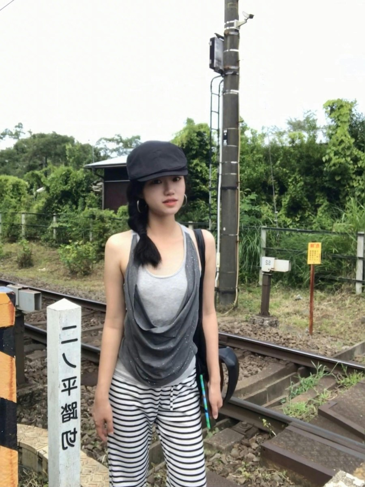
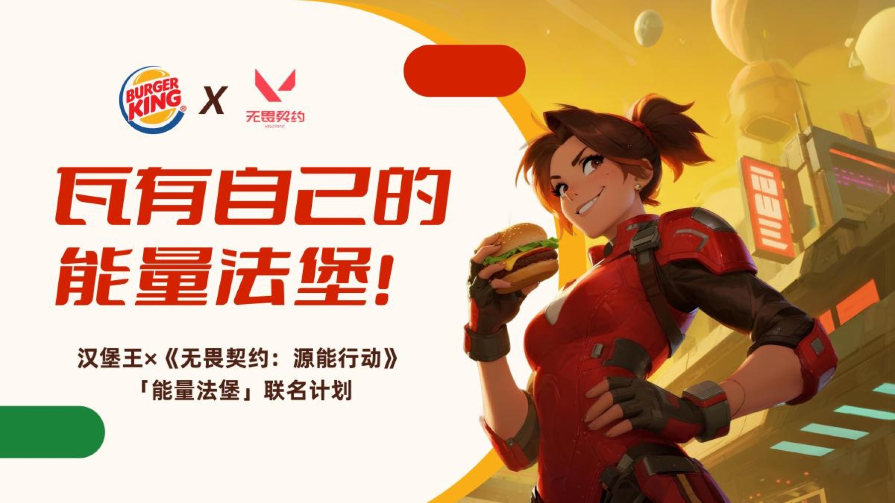

央视综艺频道
内容选题与多平台传播
最早在央视综艺频道实习时，我主要负责综艺二创内容和多平台传播，这段经历让我形成了对内容选题、热点传播和不同平台表达方式的判断。
中国传媒大学品牌营销传播硕士，2027届。实习经历围绕内容运营和用户增长展开，从“懂内容”逐步延伸到“懂用户、懂平台，并能做增长闭环”。

通过内容增长、创作者运营与平台策略积累，持续获得可量化的传播与用户增长结果。
从内容判断，到用户视角、平台生态，再到内容供给、渠道测试和数据复盘形成增长闭环。
最早在央视综艺频道实习时，我主要负责综艺二创内容和多平台传播，这段经历让我形成了对内容选题、热点传播和不同平台表达方式的判断。
在特斯拉，我基于区域用户画像和门店获客目标做短视频增长，也参与从0到1搭建门店线上增长体系，把内容生产、审核和数据复盘流程标准化，并推动到全国团队复制。
在字节TikTok，我负责海外影视垂类内容生态运营，做机构分层、内容表现监测和策略复盘，也参与内容分层评估和分发策略迭代。
最近在腾讯元宝产品部，我负责快手渠道达人内容矩阵、素材测试和复盘，参与搭建1000+达人内容矩阵，并基于多指标报告反推素材方向和资源分配。
熟练使用设计、剪辑、数据分析与AI工具，能够独立完成从内容生产到网页呈现的完整工作。
熟练使用 Photoshop、Figma，能够独立完成运营物料、UI界面、推文视觉、H5长图与AIGC海报设计。
具备公众号推文、微博及朋友圈文案写作能力，熟悉热点选题、节目宣发和多平台内容表达。
熟练使用 Premiere、剪映，能够完成短视频、艺人内容、节目二创和采访类长视频的独立剪辑。
熟练使用 Excel，掌握 SQL 与 Python基础，可完成内容监测、渠道复盘和增长数据分析。
熟练使用 Codex、WorkBuddy 与AIGC模型，可搭建素材整理、网页生成和复盘报告自动化工作流。
掌握 HTML、CSS、基础 JavaScript 与 Python脚本，能够独立搭建作品集和轻量互动页面。
围绕品牌联名、用户洞察与影像传播完成策略梳理、创意构思和方案表达。
涵盖视频剪辑、营销策划、视觉设计、内容文案与互动网页等多类作品。
